Lecture11 Physics System - Applications
Character Controller
- 一个反物理的系统：符合玩家感知 + 实现反物理运动
- 没有Character Controller时，大量Hack
- Kinematic Actor
- 不受物理规律控制
- Push其他Actor
- Shape （人类角色时）
- Capsule 主要使用，一般设计两层
- 内层：碰撞
- 外层：防止角色与物体（墙面）太近
- 高速移动时容易卡进墙体
- 相机穿透导致看到墙后物体
- Box
- Convex
- Capsule 主要使用，一般设计两层
- Collide with environment
- Sweep Test 判断
- Sliding：撞到墙上时左右滑动 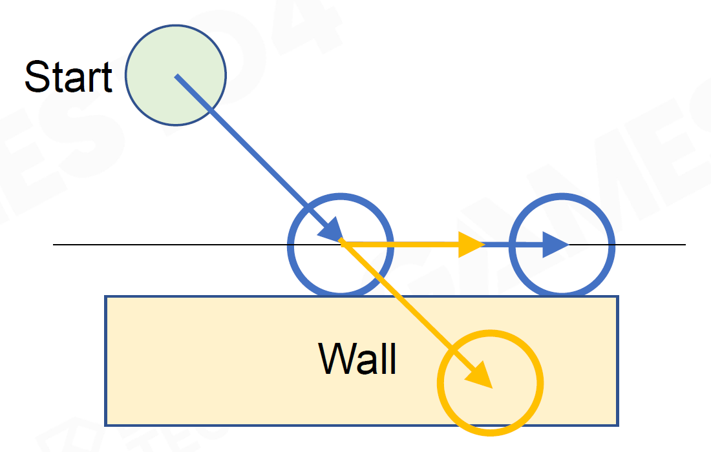
- Auto Stepping：台阶 每帧尝试抬升高度前进 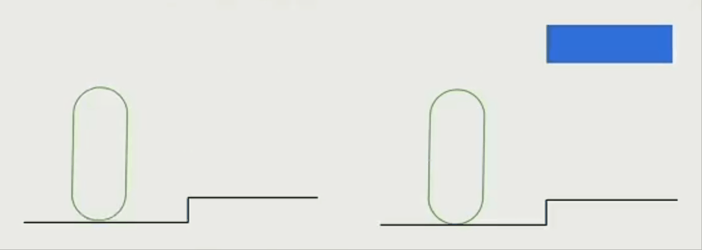
- Slope 斜坡
- 坡度大于多少时，冲上去会滑下来
- 改变Controller形状/体积 eg.蹲下站起的变化
- 限制在环境大小不够时不可站起（eg.在隧道中） 更新前重叠测试，阻止形状更新
- Push Objects (Dynamic Actors)
- Controller站在运动平台上时
- 不作处理就会平台动、Controller在原地
- Ray Cast检测所站物体上，绑定，运动时也相对于平台
- 进一步精细：平台运动过快时的趔趄等
Ragdoll
- 不适用Ragdoll：播放死亡动画 => 死亡环境并不一定与动画一致 eg. 在悬崖边，悬空挂在坡面上甚至插入地形
- 用Rigid Body将关键的Joint连结起来
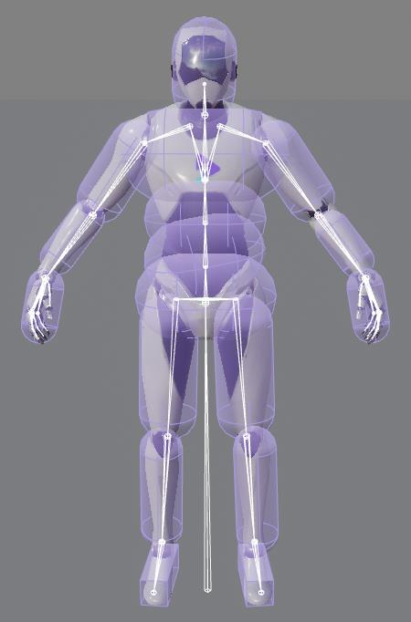
- 考虑Constraints
- 将Ragdoll中较少Joints的运动映射到Skeleton
- Animation Retargeting
- 三种Joints
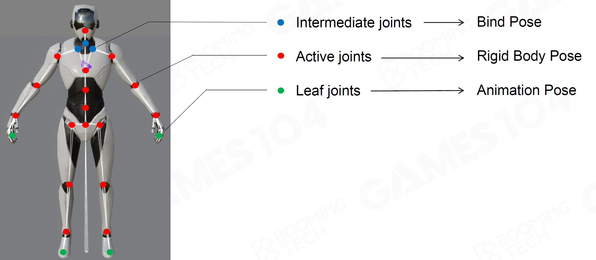
- Active Joints：与Ragdoll相同的Joints，直接使用Ragdoll数据
- Leaf Joints：一般不动，例如手掌脚掌
- Intermediate Joints：Active Joints之间的Joints，利用邻近Active Joints插值
- 死亡动画到Ragdoll的过渡
- 一个问题：游戏中动画与物理的边界在哪里？
- Powered Ragdoll - Physics-Animation Blending
- 纯Ragdoll：效果不像人类
- 纯动画：循环播放，有模式感
- 两种混合 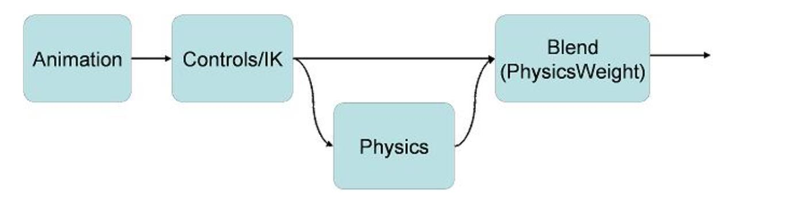
Cloth
传统：Bake动画，随着运动方向更换动画，移动端常用
动力学骨骼模拟：精度较低
Mesh-based Cloth Simulation ##### Mesh-based Cloth Simulation
Physical Mesh远低于Render Mesh，模拟完再用重心坐标插值到Render Mesh
Constraints：
- 划定布料每个顶点的运动范围
- 一般离人体越近，运动范围越小 eg.披风脖子处运动幅度小
- 解决衣料穿模问题
布料物理材质（丝绸/棉布等）
Cloth Solver - Mass Spring System
质点弹簧系统
Spring force 胡克力 \[ \vec F^S=k_{\rm spring}\Delta\vec x \]
Spring damping force （damping 衰减，空气阻力所致/提高迭代稳定性） \[ \vec F^d=-k_{\rm damping}\vec v \]
横向、纵向、斜向、跨越质点加弹簧，提高精度 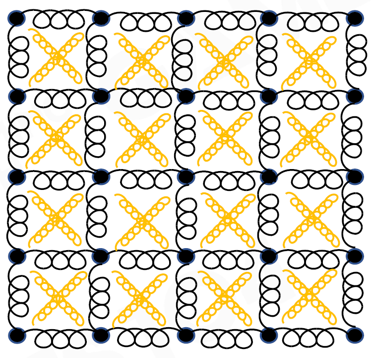
受力
- 重力
- 风力
- 空气阻力
- 周围弹簧弹力（胡克力 + damping） \[ \vec F_{\rm net}^{\rm vertex}=M\vec g+\vec F_{\rm wind}(t)+\vec F_{\rm air\ resistance}(t)+\sum_{\rm springs\in v}(k_{\rm spring}\Delta \vec x(t)-k_{\rm damping}\vec v(t))=M\vec a(t) \]
Verlet数值积分 \[ \vec x(t+\Delta t)=2\vec x(t)-\vec x(t-\Delta t)+\vec a(t)(\Delta t)^2 \]
- 半隐式欧拉积分 \[ \vec v(t+\Delta t)=\vec v(t)+\vec a(t)\Delta t \\ \vec x(t+\Delta t)=\vec x(t)+\vec v(t+\Delta t)\Delta t \]
- Observation \[ \left\{\begin{array}{l}\vec v(t+\Delta t)=\vec v(t)+\vec a(t)\Delta t \\ \vec x(t+\Delta t)=\vec x(t)+\vec v(t+\Delta t)\Delta t\\ \vec x(t)=\vec x(t-\Delta t)+\vec v(t)\Delta t \end{array}\right.\ \Rightarrow\ \left\{\begin{array}{l} \vec x(t+\Delta t)=\vec x(t)+(\vec v(t)+\vec a(t)\Delta t)\Delta t\\ \vec x(t)=\vec x(t-\Delta t)+\vec v(t)\Delta t \end{array}\right. \]
- 得到 \[ \vec x(t+\Delta t)=2\vec x(t)-\vec x(t-\Delta t)+\vec a(t)(\Delta t)^2 \]
- 与半隐式欧拉积分数学等价，但实现上因为排除了不稳定的速度因素，更加稳定
Cloth Solver - Position Based Dynamics
- 区别
- 传统Simulation：Constrains => Force => Velocity => Position
- PBD：Constrains ==> Position
- 用约束描述物理属性
- Solver更稳定
- 后面会再进一步解释
Self Collision
包括布料与布料、布料与刚体的碰撞，精度较低时极易发生
- 暴力方法：加厚布料（渲染时），发生自穿插时不会渲染出来
- 提高迭代精度，减小迭代Step
- Maximal velocity 这样每次穿插不会过深，可以在下次迭代时弹回
- 增加一个负向力场，负向SDF实现
Destruction
Chunk Hierarchy，组织未破碎物体的碎片
Connectivity Graph，生成连接关系，每个Edge有Connectivity Value
Damage Calculation，受力超过Connectivity Value则破坏连接
- Impact Point向外扩散 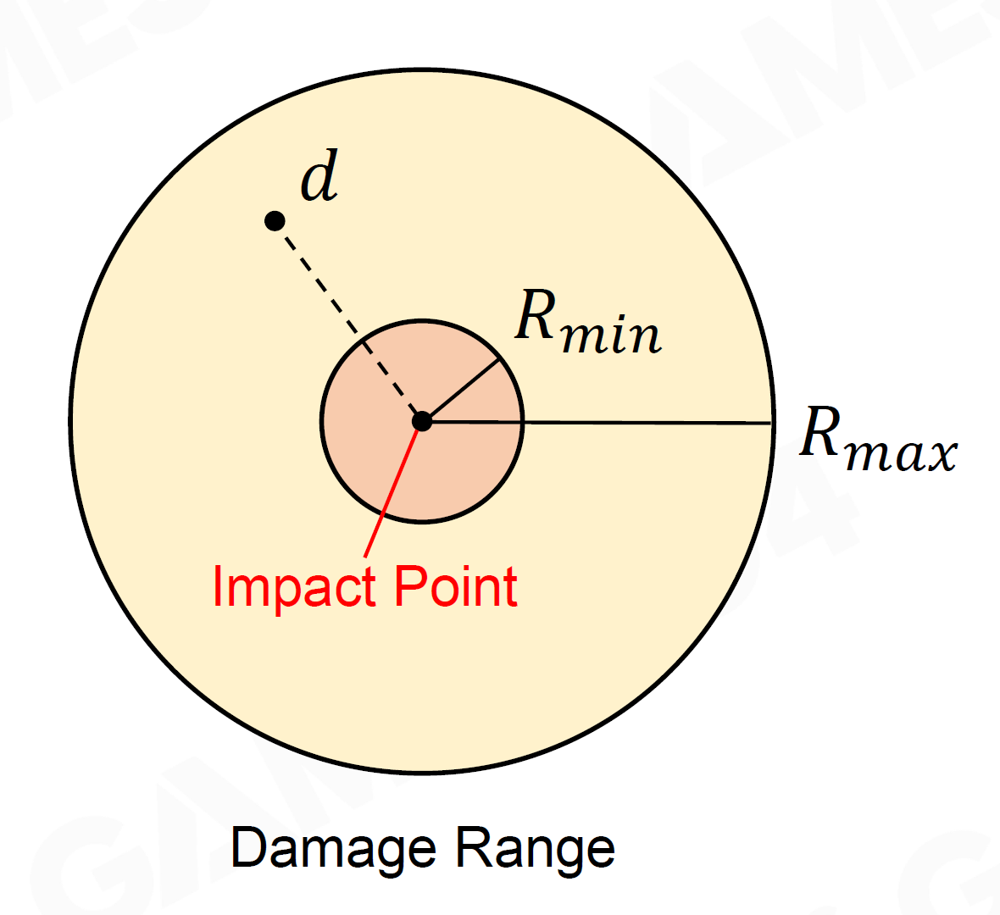 \[ D_d=\left\{\begin{aligned} &D &&d\le R_\min\\ &D\cdot\left(\dfrac{R_\max-d}{R_\max-R_\min}\right)^K &&R_\min<d<R_\max\\ &0 &&d\ge R_\max\quad \end{aligned}\right. \]
Pin住某些与世界的连接
Voronoi生成Chunk
- @PBA 随机取点，等距垂平面
- 断面纹理生成
- 实时的3D Texture生成
- 离线生成，runtime切换
- Chunk的分布 => 取点的分布
Pipeline 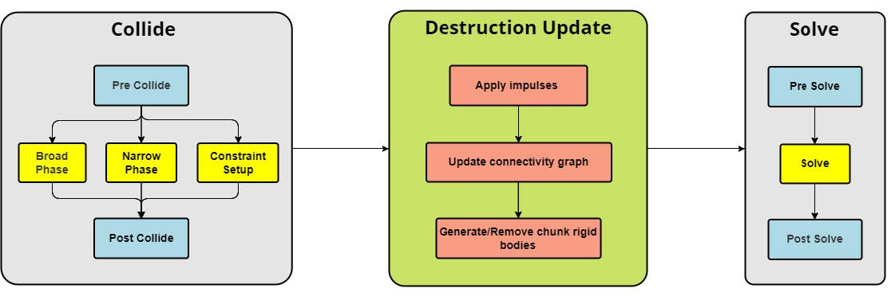
增加其他真实感效果
- 音效
- 粒子
- Navigation更新
谨慎使用，增加了大量Mesh，对算力要求很高
Vehicle
A rigidbody actor 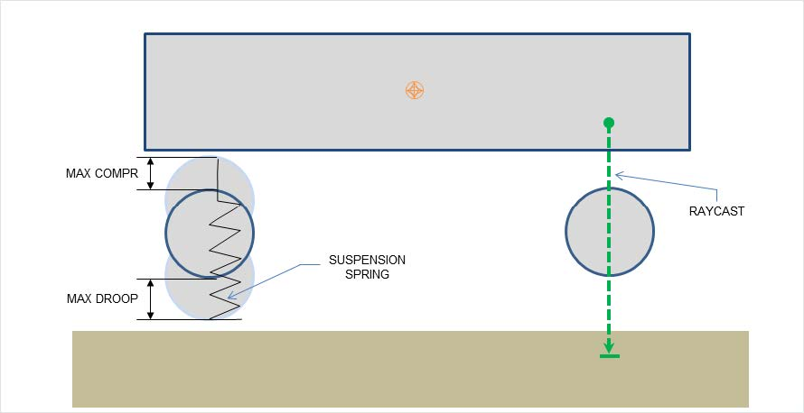
驱动力 Traction Force 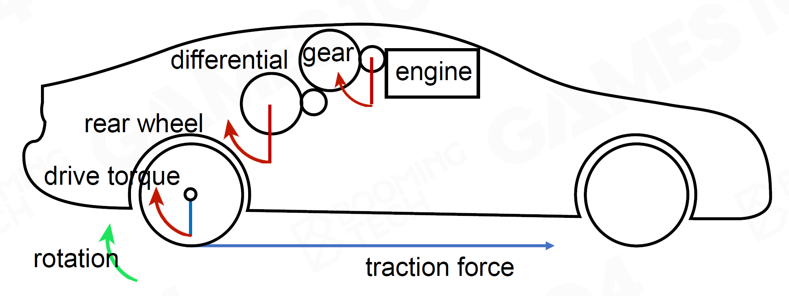
- 扭矩 Torque \(T=T_{\rm engine}X_gX_dn\) 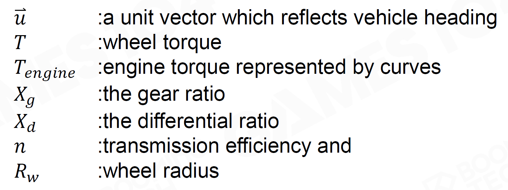
- 驱动力 Traction \(\vec F_{\rm Traction}=\dfrac{T}{R_w}\vec u\)
悬挂力 Suspension Force 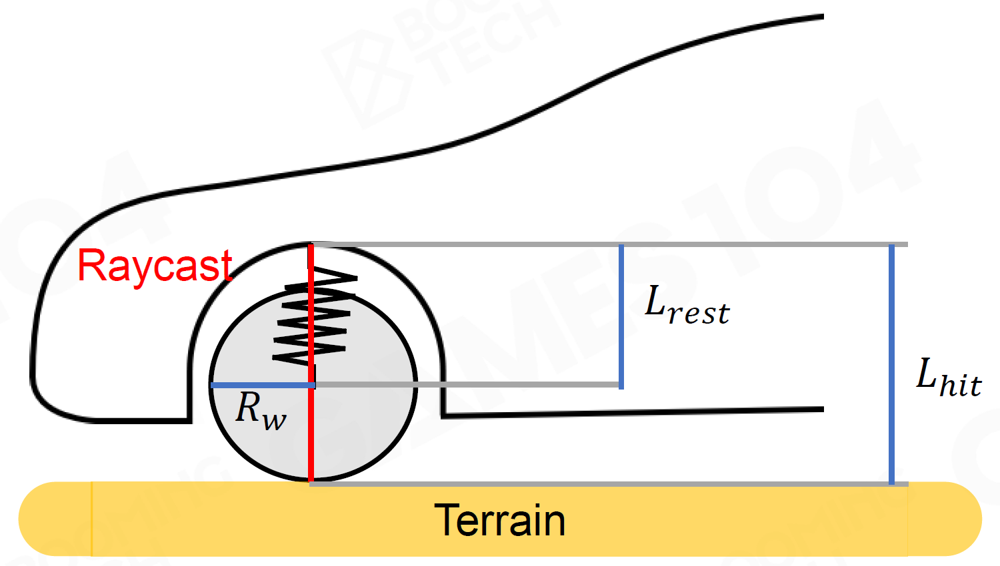 \[ |\vec F_{\rm suspension}|=k(L_{\rm rest}-(L_{ \rm hit}-R_W)) \] 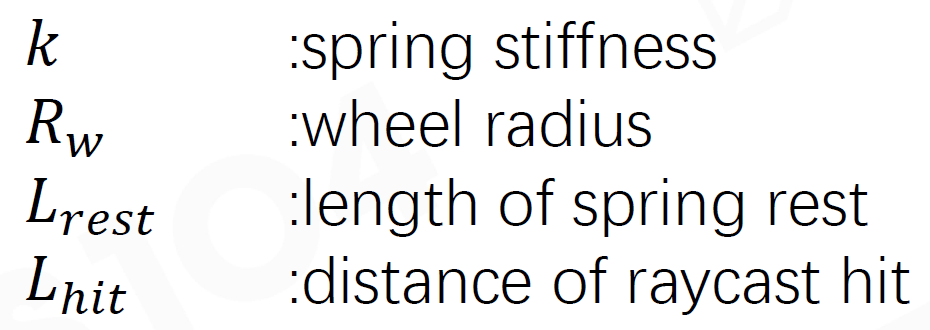
轮胎力 Tire Forces
- 径向力 Longitudinal force \(F_{\rm long}=F_{\rm traction}+F_{\rm drag}+F_{rr}\) 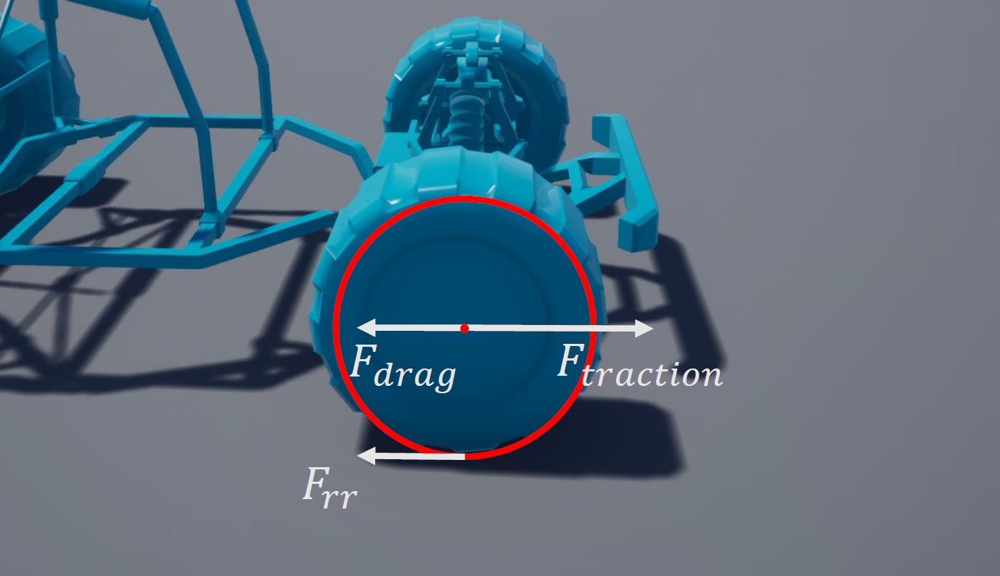
- 切向力 Lateral force \(F_{\rm lateral}=C_c*a\) 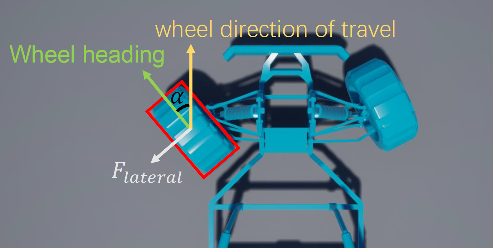 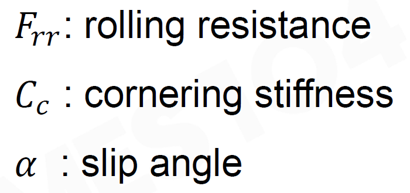
重心 Center of Mass 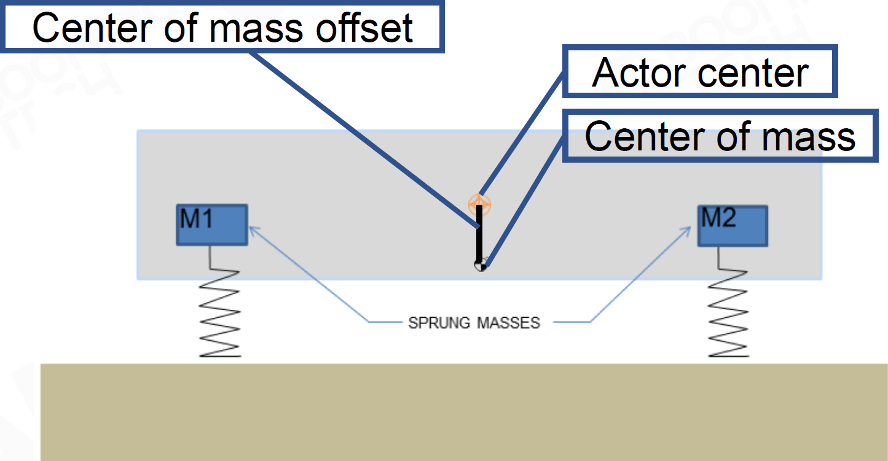 \[ M=M_1+M_2\quad \vec x_{cm}=\dfrac{M_1\vec x_1+M_2\vec x_2}{M} \] 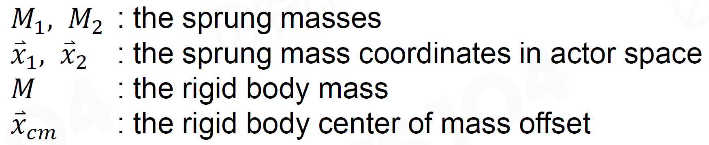
- 重心太靠前在飞跃时容易栽，重心准确则稳定
- 重心靠前转向力不足，靠后转向力过大
- 变速时重心会有偏移 Weight Transfer 加速时车身后仰重心靠后，刹车时车身前倾重心靠前
转向角
转向时，若内外侧轮转向角相同，则外侧轮打滑空转
转向时，外侧轮转向角要大于内侧轮
根据旋转中心计算 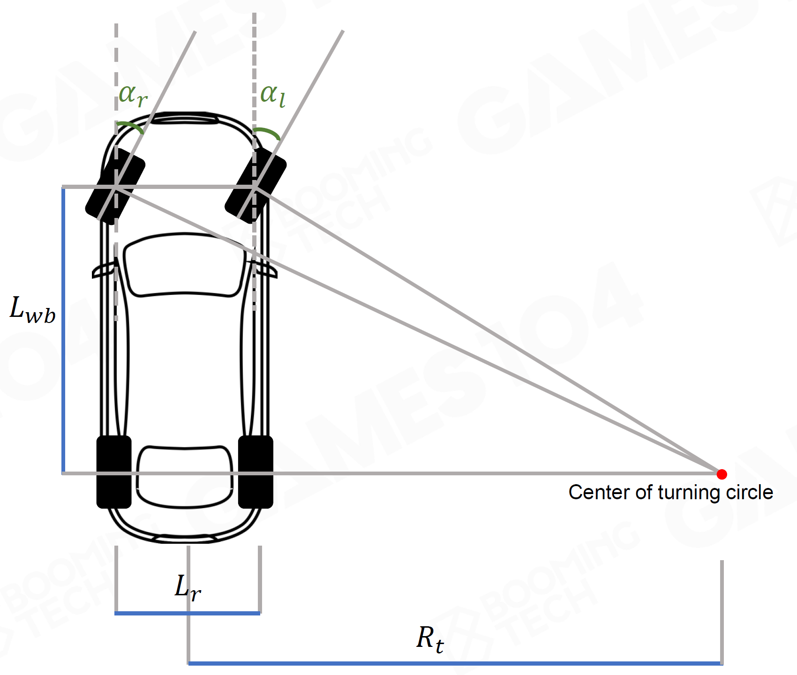 \[ \alpha_l=\tan^{-1}\dfrac{L_{wb}}{R_t+\frac{L_r}{2}}\\ \alpha_r=\tan^{-1}\dfrac{L_{wb}}{R_t-\frac{L_r}{2}} \] 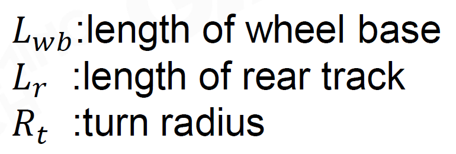
轮胎接触

- 单方向垂直向下的 Single Raycast 效果不真实，易发生穿插
- 球面 Spherecast 实现真实的接触
Advanced Physics : PBD / XPBD
- 拉格朗日力学：用约束描述所有运动，把力学计算改变为求解约束问题
- eg. 匀速圆周运动
- 位置约束 \(C(\mathbf x)=\|\mathbf x\|-r=0\)
- 速度约束 \(\dfrac{\mathrm d}{\mathrm dt}C(\mathbf x)=\dfrac{\mathrm dC}{\mathrm d\mathbf x}\cdot \dfrac{d\mathbf x}{\mathrm dt}=\mathbf J\cdot\mathbf v=0\)
- \(\mathbf J\) Jacobian
- \(\mathbf J^T\) 与 \(\mathbf v\) 垂直 \(\mathbf J^T\cdot\mathbf v=0\)
- 把速度转换成速度约束
- 弹簧质点等系统也都可用约束表示 eg. 弹簧质点系统拉伸时：\(C_{\rm stretch}(\mathbf x_1, \mathbf x_2)=\|\mathbf x_1-\mathbf x_2\|-d\) 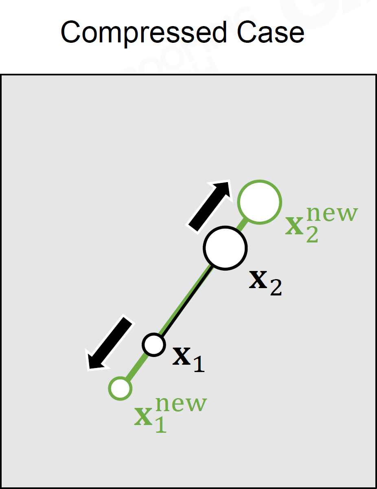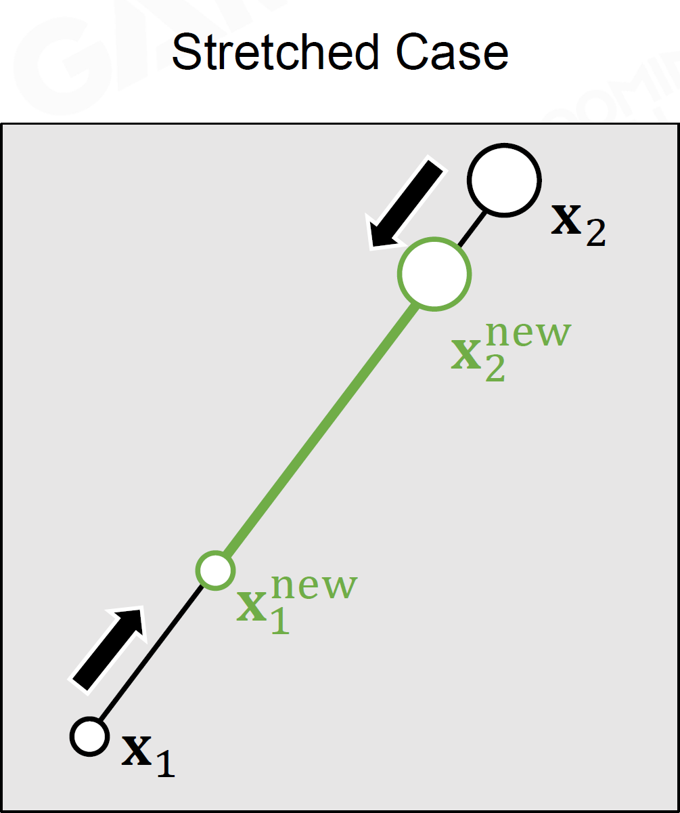
PBD, Position Based Dynamics
- 约束投影
- 求解约束的方法：迭代法
- Jacobi矩阵指向正确的方向，反复迭代直到满足约束（接近）
- 收敛相对稳定
- 布料应用广泛
- NVIDIA Flex
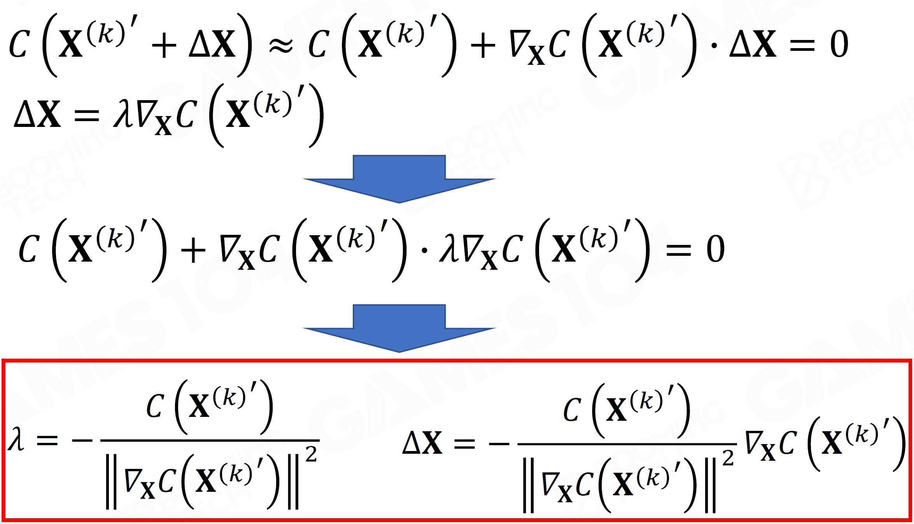
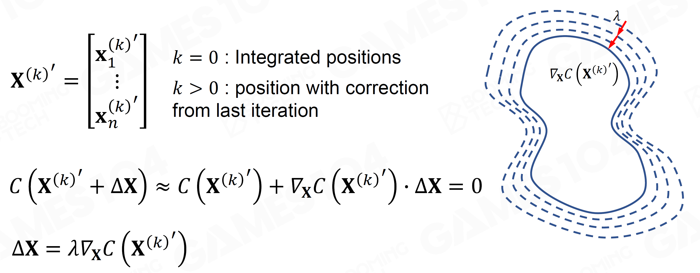
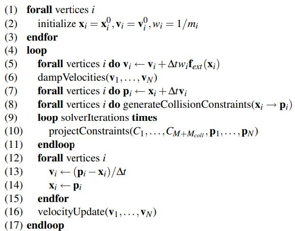
XPBD, Extended Position Based Dynamics
在PBD基础上引入stiffness量，表示硬约束还是软约束
硬约束：stiffness非常大，易爆炸
软约束：stiffness较小，布料等软体
\[ U(\mathbf x)=\dfrac{1}{2}\mathbf C(\mathbf x)^T\alpha^{-1}\mathbf C(\mathbf x)\quad \alpha:\text{stiffness} \]
将约束转换为服从性矩阵 Compliance Matrix
Unreal Engine Chaos